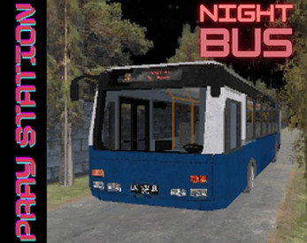
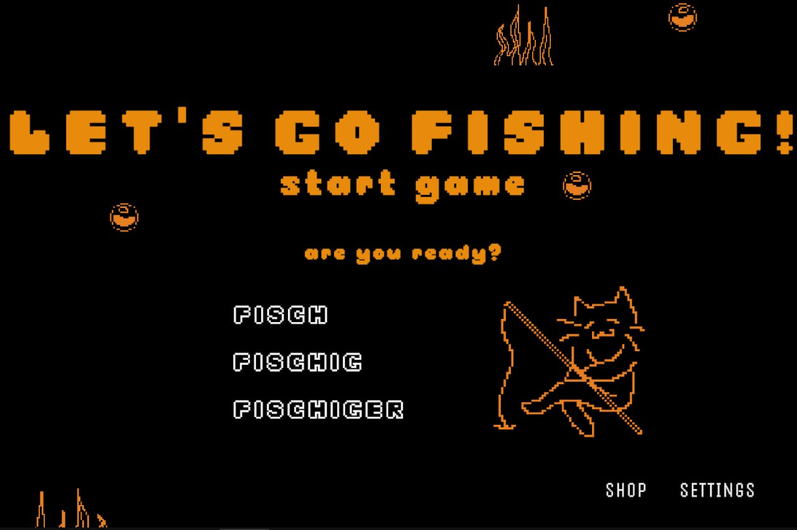
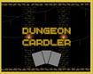
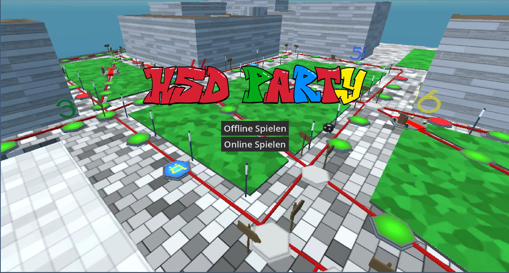

Night Bus
A short-form retro horror game exploring escalating tension across a sequence of nights spent waiting at a lonely bus stop. My first complete solo project, built in Unity and released on itch.io.
Gameplay & systems programmer working across Unity and Godot, with a focus on modular, data-driven architecture, from solo horror titles to networked multiplayer systems.
I'm a Media Informatics student at Hochschule Düsseldorf, specializing in gameplay programming across Unity and Godot. My work spans C#, GDScript, and Java, with a focus on building modular, data-driven game systems. I'm currently looking for internship and junior gameplay programming opportunities.

A short-form retro horror game exploring escalating tension across a sequence of nights spent waiting at a lonely bus stop. My first complete solo project, built in Unity and released on itch.io.

A university team project pairing a VR fishing experience with a networked arcade display running a separate Unity instance, combining real-time score synchronization with gradually emerging horror elements.

A 2D deckbuilding rogue-like combining turn-based tactical combat with a dynamic item-card synergy system. Solo-developed in Unity and released on itch.io as a playable demo.

A university team project: a 3D multiplayer party game inspired by Mario Party, featuring a full branching board system, minigames, and a campus-themed setting.